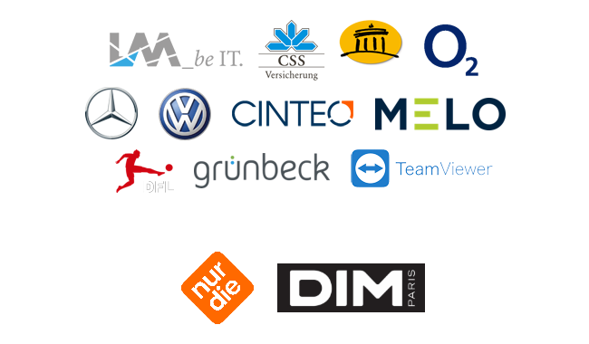

Referenzen
In allen Projekten wird zusammen mit den involvierten
Beteiligten und Partnern transparent versucht, für einen Kunden
bzw. Auftraggeber über längere Zeiträume mit wechselnden
Aufgaben proaktiv zu agieren und zu arbeiten. Dabei wird die
nahtlose Integration in bestehende Projektteams garantiert. Die
beste Referenz dafür, dass dies in den letzten Jahren
kundenseitig angenommen wurde, lassen die stetigen
Vertragsverlängerungen erkennen.
|
|
- Projekt Management, Application Lifecycle
Management, Test-, Qualitäts-, Change- und
Release-Management, Testarchitekt, Business-Analyse
und Evaluierung, Betriebsdokumentation
- Planung/Architektur neuer System- und
Integrationsumgebungen für den Test bzw. die
Einführung einer auf Microsoft-Technologien
basierenden eCommerce-Infrastruktur für Automobile
und Finanzprodukte
|
|
|
- Strategisches und operatives Test-, Qualitäts-
sowie Defect Management, Erstellung und
Positionierung von Teststrategien und -konzepten
- Dokumentation, Nachverfolgung und
Nachweiserbringung durchgeführter Modul-, System-,
End-To-End- sowie nichtfunktionaler Testformen
- Cutover/HyperCare Planung sowie verantwortliche
Leitung
|
|
|
- Test- und Qualitätsmanagement, Defect
Management, Testarchitekt, SCRUM Master
- Unterstützung im Rahmen der digitalen
Transformation von CRM/ERP- sowie eCommerce-Lösungen
unter Verwendung von Microsoft Cloud-Technologien
|
|
|
- Projektmanagement nearshore/offshore, Test- und
Qualitätsmanagement, Application Lifecycle
Management, Business-Analyse
- Einführung einer auf SAP- und
eCommerce-Technologien basierenden
Backend/Frontend-Verkaufsplattform für Automobile
|
|
|
- Strategische Beratung im Rahmen der
Konzeptionierung und Etablierung unternehmensweiter
Test- und Qualitätsrichtlinien für Softwareprojekte
- Unterstützung der operativen Qualitätssicherung
von mobilen sowie webbasierten Apps für einen
mittels IoT- und Cloud-Technologien steuerbaren
Roboterrasenmäher
|
|
|
- Strategische Beratung im Rahmen der
Konzeptionierung, Pilotierung und Etablierung
gruppenweiter Test- und Qualitätsrichtlinien,
Application Lifecycle Management
- Unterstützung im Rahmen der digitalen
Transformation von ERP-Lösungen unter Verwendung von
Microsoft Cloud-Technologien sowie dem operativen
Test- sowie Defect/Change-Management
|
|
|
- Business Analyse, Prozess Analyse und
-Implementierung, Test- und Qualitäts-Management,
Dokumentation
- Migrationsstrategien für
Dokumentenmanagement-Systeme
|
|
|
- Business- und Prozess-Analyse,
Migrationsstrategien
- Design von Testszenarien für die Zusammenführung
von Kundendatenbanken
|
|
|
- Geschäftsprozessimplementierung und Content
Management
- Test-, Release- and Defect-Management
|
|
|
- Prozessanalyse des Softwarelebenszyklus und
Identifikation von Prozessabweichungen
- Test-Toolevaluierung, Fehlerprofil- und
DILO-Analyse
|
|
|
|
|
|
Weitere Kunden und
Geschäftspartner
|
|
 |